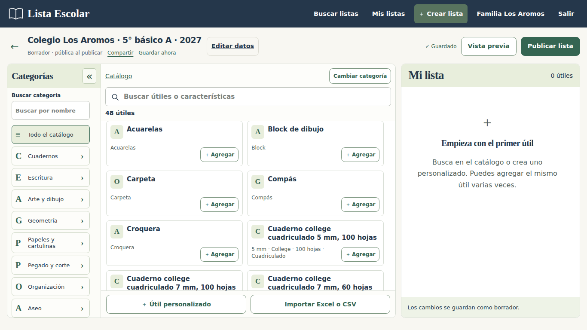
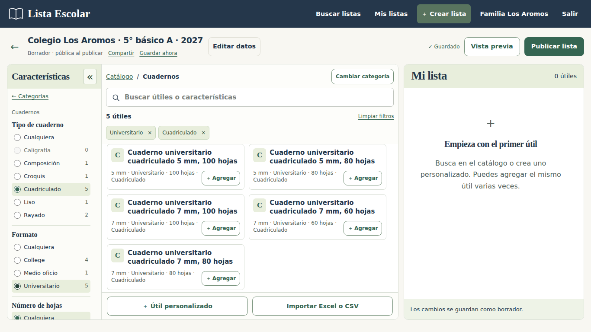
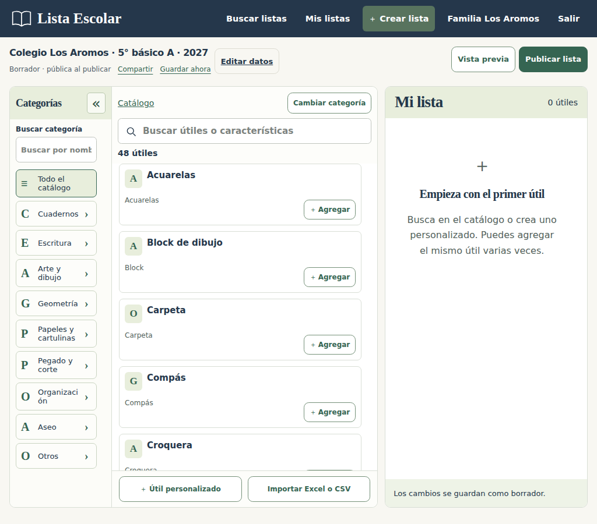
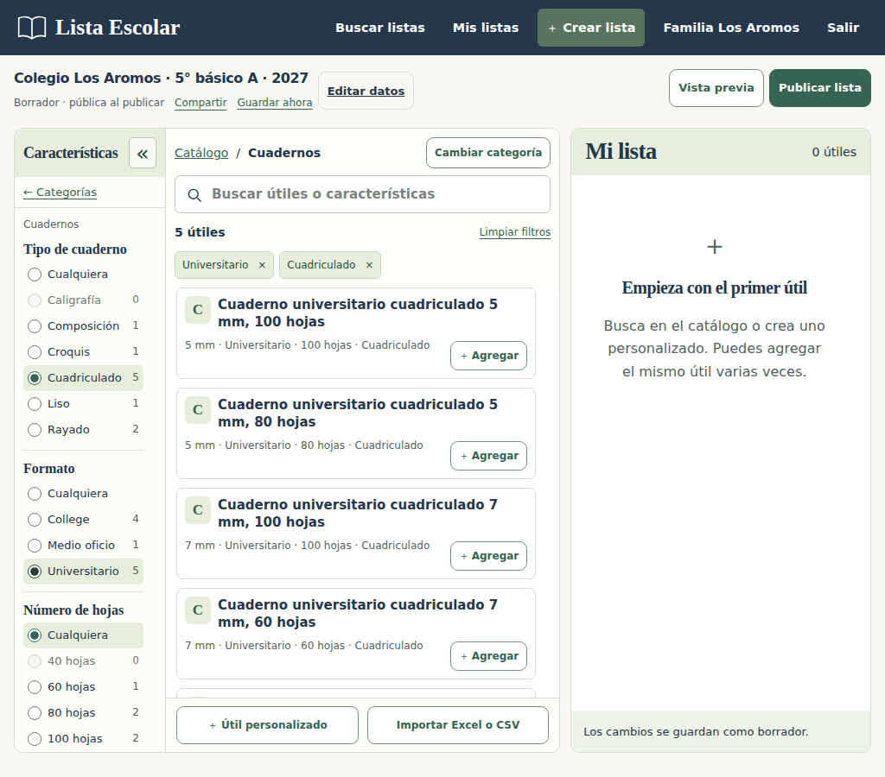
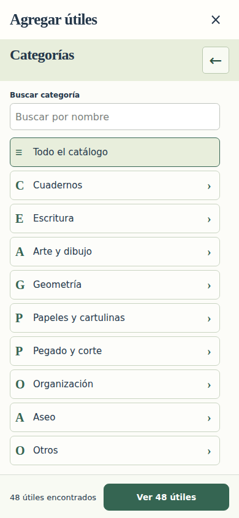
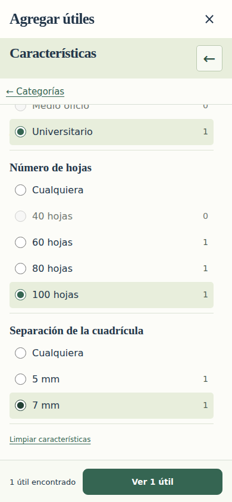
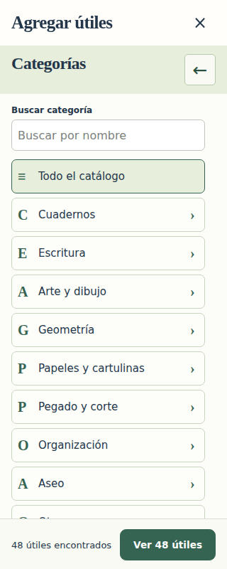
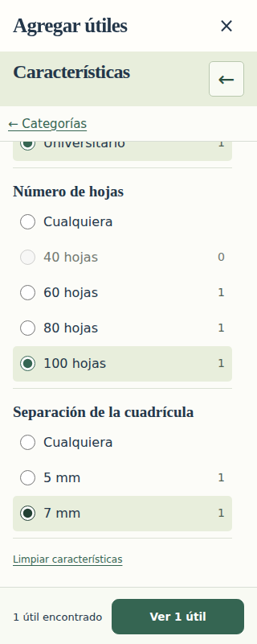

Categorías y filtros en un mismo panel
El catálogo comienza mostrando las categorías. Al elegir una, ese mismo panel cambia a sus características. Catálogo y Volver a categorías permiten volver sin perder los filtros actuales.
En escritorio, los resultados y tu lista permanecen visibles. En teléfonos, el botón Ver útiles abre los resultados. El panel conserva su vista, desplazamiento y foco al cerrar y volver a abrir.
Capturas reales con datos de prueba en una base aislada, 10 de noviembre de 2026. Pulsa una imagen para verla completa. Abrir la aplicación local.
Escritorio · 1366 × 768




Pantalla mediana · 1024 × 900




Teléfono · 390 × 844




Teléfono estrecho · 320 × 800



